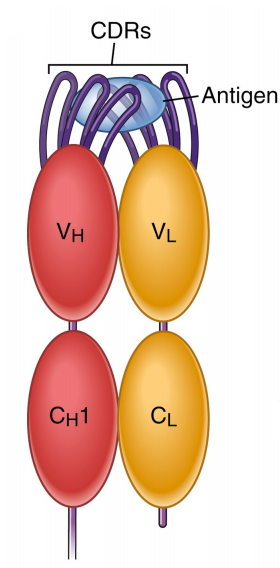
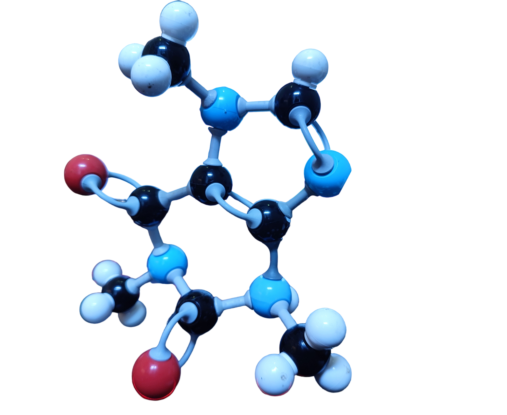
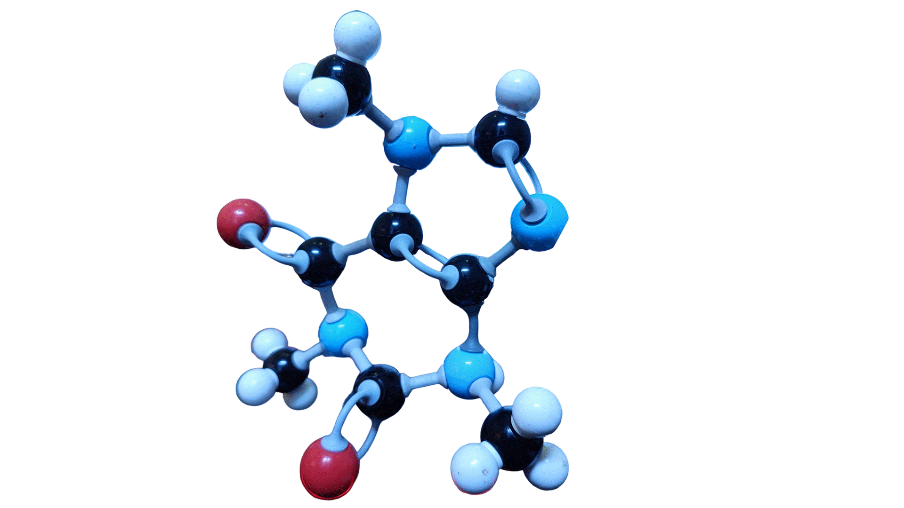
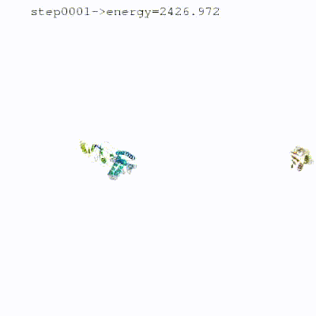

classDiagram
class EGNNEncoder {
- update_X: bool
- features_type: str
- features: ProteinFeatures
- node_in: int
- edge_in: int
- W_v: nn.Linear
- W_e: nn.Linear
- layers: nn.ModuleList
- W_x: nn.Linear
- U_x: nn.Linear
- T_x: nn.Sequential
+ __init__(args, node_hdim=0, features_type='backbone', update_X=True)
- forward(X, V, S, A)
}
class HierEGNNEncoder {
- update_X: bool
- backbone_CA_only: bool
- clash_step: int
- residue_mpn: EGNNEncoder
- atom_mpn: EGNNEncoder
- W_x: nn.Linear
- U_x: nn.Linear
- T_x: nn.Sequential
- W_a: nn.Linear
- U_a: nn.Linear
- T_a: nn.Sequential
- embedding: nn.Embedding
+ __init__(args, update_X=True, backbone_CA_only=True)
+ forward(X, V, S, A)
}
class MPNNLayer {
- num_hidden: int
- num_in: int
- dropout: nn.Dropout
- norm: nn.Identity
- W: nn.Sequential
+ forward(h_V: torch.Tensor, h_E: torch.Tensor, mask_attend: torch.Tensor) -> torch.Tensor
}
class PosEmbedding {
- num_embeddings: int
+ forward(E_idx: torch.Tensor) -> torch.Tensor
}
class AAEmbedding {
- hydropathy: dict
- volume: dict
- charge: dict
- polarity: dict
- acceptor: dict
- donor: dict
- embedding: torch.Tensor
+ to_rbf(D: torch.Tensor, D_min: float, D_max: float, stride: float) -> torch.Tensor
+ transform(aa_vecs: torch.Tensor) -> torch.Tensor
+ dim() -> int
+ forward(x: torch.Tensor, raw: bool=False) -> torch.Tensor
+ soft_forward(x: torch.Tensor) -> torch.Tensor
}
class ABModel {
- k_neighbors: int
- hidden_size: int
- embedding: AAEmbedding
- features: ProteinFeatures
- W_i: nn.Linear
- bce_loss: nn.BCEWithLogitsLoss
- ce_loss: nn.CrossEntropyLoss
- mse_loss: nn.MSELoss
- huber_loss: nn.SmoothL1Loss
+ select_target(tgt_X: torch.Tensor, tgt_h: torch.Tensor, tgt_A: torch.Tensor, tgt_pos: list) -> tuple
}
class PositionalEncodings {
-num_embeddings: int
-period_range: list
+__init__(num_embeddings, period_range=[2,1000])
}
class ProteinFeatures {
- top_k: int
- num_rbf: int
- features_type: str
- direction: str
+ forward(positions: torch.Tensor, h_V: torch.Tensor, h_E: torch.Tensor, A: torch.Tensor, R: torch.Tensor, pos: list) -> tuple
}
class RefineDocker {
+ rstep: int
+ target_mpn: EGNNEncoder
+ hierarchical: bool
- U_i: nn.Linear
- struct_mpn: Union[EGNNEncoder, HierEGNNEncoder]
- W_x0: nn.Sequential
- U_x0: nn.Sequential
+ struct_loss(bind_X, tgt_X, true_V, true_R, true_D, inter_D, true_C): Tuple[torch.Tensor, torch.Tensor, torch.Tensor, torch.Tensor, torch.Tensor]
+ forward(binder, target, surface): ReturnType
}
class CondRefineDecoder {
-hierarchical: bool
-residue_atom14: Tensor
-W_s0: Sequential
-W_x0: Sequential
-U_x0: Sequential
-W_s: Linear
-U_i: Linear
-target_mpn: EGNNEncoder
-struct_mpn: EGNNEncoder or HierEGNNEncoder
-seq_mpn: EGNNEncoder or HierEGNNEncoder
+struct_loss(): Function
+forward(): ReturnType
+generate(): ReturnType
}
class AttRefineDecoder {
- W_x: nn.Linear
- W_s: nn.Linear
- struct_mpn: EGNNEncoder
- seq_mpn: EGNNEncoder
- W_x0: nn.Sequential
- U_i: nn.Linear
- target_mpn: EGNNEncoder
- W_att: nn.Sequential
+ attention(Q: Tensor, context: Tensor, cmask: Tensor): Tensor
+ struct_loss(X: Tensor, mask: Tensor, true_D: Tensor, true_V: Tensor, true_R: Tensor, true_C: Tensor): Tuple
+ forward(binder: Tuple, target: Tuple, surface: Tuple): ReturnType
+ generate(target: Tuple, surface: Tuple): ReturnType
}
class UncondRefineDecoder {
- W_x: nn.Linear
- W_s: nn.Linear
- struct_mpn: EGNNEncoder
- seq_mpn: EGNNEncoder
- W_x0: nn.Sequential
+ struct_loss(X: Tensor, mask: Tensor, true_D: Tensor, true_V: Tensor, true_R: Tensor, true_C: Tensor): Tuple
+ forward(binder: Tuple, target: Tuple, surface: Tuple): ReturnType
+ generate(target: Tuple, surface: Tuple): ReturnType
}
class SequenceDecoder {
- no_target
- W_s
- seq_rnn
- U_i
- target_mpn
- W_att
+ attention(Q, context, cmask)
+ forward(binder, target, surface)
+ generate(target, surface)
}
HierEGNNEncoder *-- EGNNEncoder : init
ABModel *-- AAEmbedding : W_i = nn.Linear(self.embedding.dim(), args.hidden_size)
ABModel *-- ProteinFeatures : init features
RefineDocker *-- EGNNEncoder : init
CondRefineDecoder *-- EGNNEncoder : init
AttRefineDecoder *-- EGNNEncoder : init
ABModel --|> RefineDocker : inherits dihedral features
ABModel --|> CondRefineDecoder : Inherits
ABModel --|> AttRefineDecoder : Inherits
RefineDocker *-- HierEGNNEncoder : init
CondRefineDecoder *-- HierEGNNEncoder : init
ABModel --|> UncondRefineDecoder : Inherits
ABModel --|> SequenceDecoder : Inherits
PositionalEncodings --* ProteinFeatures : init
PosEmbedding --* AttRefineDecoder : init
PosEmbedding --* CondRefineDecoder : init
PosEmbedding --* UncondRefineDecoder : init
EGNNEncoder <|-- MPNNLayer : init
EGNNEncoder <|-- ProteinFeatures : init
Antibody-antigen Docking and Design via Hierarchical Equivariant Refinement Networks (HERN)
Presentation created by Pejvak Moghimi for InstaDeep
Background and Motivations
- PhD in machine learning and immunoinformatics
- Deep noisy long-tailed learning of antibody convergence across AIRRs
Introduction
- Antibodies, Paratopes, Epitopes and docking
- Graph Neural Networks (GNNs)
- Message Passing in GNNs
Antibodies, Paratopes, Epitopes and docking
- Antibodies are Y-shaped proteins that bind to antigens.
- The antibody’s binding-surface is called the paratope.
- An antigen’s binding-surfaces are called the epitopes.
- An antigen can have multiple epitopes.
- Docking is the process of finding the best binding pose of a paratope to an epitope. 
Molecules as Graphs
- The nodes in the graph represent the atoms of the molecule.
- The edges represent the bonds between the atoms.
- The graph structure captures the spatial information of the molecule.



Graph Neural Networks (GNNs)
GNNs are a class of neural networks, based on the idea of message passing, that operate on graph-structured data.
GNNs have been successfully applied to protein design, molecular docking, drug design, and protein-protein interaction, and other applications.
GNNs can be used to model complex molecular interactions.
- The atoms (nodes/vertices) of the molecular graph can be represented by a set of features, and the bonds (edges) can also be represented by a set of features.
- The features of the atoms and bonds can be updated by message passing.
Equivariant Graph Neural Networks (EGNNs)
- Equivariance is a property of a function that allows it to be invariant to a certain transformation.
- In the context of GNNs, equivariance is a property of the GNN that allows it to be invariant to a certain transformation on the graph.
- EGNNs are GNNs that are equivariant to graph isomorphism.
- isomorphism is a transformation that preserves the graph structure.
- I.e. EGNNs are invariant to group structure and the order of nodes in the graph.
Message Passing in GNNs
- Message passing is the process of propagating information through a graph.
- Defines nodes’ and/or edges’ features in terms of the neighbouring nodes’ and/or edges’ features.
- The message passing is performed in different ways, multiple times in parallel and a hierarchical manner.
- Nodes’ (Atoms) and edges’ (bonds) features are updated through message passing, resulting in an embedding representation that captures the global and/or local spatial information of the molecule.
- It can be used in both supervised and unsupervised learning.
Message Passing in GNNs
- The message passing process in GNNs is based on the following equation: \[ \mathbf{h}_i^{\left(t+1\right)} = \sigma\left(\mathbf{W}_h\mathbf{h}_i^{\left(t\right)} + \sum_{j\in \mathcal{N}(i)} \mathbf{W}_e \mathbf{e}_{ij}^{\left(t\right)}\right) \]
- Where \(\mathbf{h}_i^{\left(t\right)}\) is the node feature vector at time \(t\) for node \(i\), where time is the number of message passing steps.
- \(\mathbf{W}_h\) is the weight matrix for the node features.
- \(\mathbf{e}_{ij}^{\left(t\right)}\) is the edge feature vector at time \(t\) between node \(i\) and node \(j\).
- \(\mathbf{W}_e\) is the weight matrix for the edge features.
- \(\mathcal{N}(i)\) is the set of neighbors of node \(i\).
- \(\sigma\) is the activation function.
Message Passing in GNNs
- Message passing steps are as follows:
- Reading the node features \(\mathbf{h}_i^{\left(t\right)}\).
- Reading the edge features \(\mathbf{e}_{ij}^{\left(t\right)}\).
- Aggregating the node features by an aggregation function \(\mathcal{A}\).
- Updating the node features by a message function \(\mathcal{M}\).
- Passing the updated node features to the next node.
- For each node \(i\) in the graph, update its feature vector \(h_i\) with the features of its neighbours.
Problem Formulation
- Given a protein-protein complex and a paratope, find the best docking pose of the paratope to the epitope.
- The problem is formulated as a graph neural network problem.
- The input consists of a paratope-epitope represented as a graph.
- The output consists of the best docking pose of the paratope to the epitope.
Paratope-Epitope Complex
- The paratope is represented by two graphs:
- A graph to represent the paratope in terms of its residues.
- Each node in the graph only represents \(C_{\alpha}\) atom of the residue.
- A graph to represent the paratope in terms of its atoms, including the side chains.
- A graph to represent the paratope in terms of its residues.
- Each node in the graph represents an atom.
- Each edge in the graph represents a bond between two atoms.
- The nodes in the graph are represented as feature vectors.
- The features of each node consist of the atomic coordinates.
- The edges in the graph are represented as feature vectors.
- The features of each edge consist of the bond type.
Hierarchical Equivariant Refinement Network (HERN)
- Refinement Networks are neural networks that iteratively refine a set of initial coordinates.
- The refinement process consists of:
- Predicting the next residue in the sequence.
- Predicting the next set of coordinates based on the current coordinates and the predicted residue.
- Computing a loss function based on the predicted and the current coordinates.
- The refinement process is repeated until the sequence is fully predicted.
- The message passing is performed in a hierarchical manner for computational efficieny.
Oversmoothing and suspended animation
Docking



From Bonvin lab: HADDOCK2.4 Antibody - Antigen tutorial
HERN
Equations
equation 1
- A paratope is a sequence of residuesin the complementarity determining regions (CDRs) of an antibody:
- \(\boldsymbol{a}=\boldsymbol{a}_1 \cdots a_n\)
- An epitope is composed of \(m\) residues that are closest to a paratope:
- \(\boldsymbol{b}=\boldsymbol{b}_1 \boldsymbol{b}_2 \cdots \boldsymbol{b}_m\)
- It is a subsequence of an antigen:
- \(\boldsymbol{c}=\boldsymbol{c}_1 \boldsymbol{c}_2 \cdots \boldsymbol{c}_M\),
- where \(\boldsymbol{b}_i=\boldsymbol{c}_{e_i}\) and \(e_i\) is the index of epitope residue \(\boldsymbol{b}_i\) in the antigen.
equation 2
- The epitope 3D structure \(\mathcal{G}_b\) is described as a point cloud of atoms:
- \(\left\{\boldsymbol{b}_{i, j}\right\}_{1 \leq i \leq m, 1 \leq j \leq n_i}\)
- where \(n_i\) is the number of atoms in residue \(\boldsymbol{b}_i\).
- \(\left\{\boldsymbol{b}_{i, j}\right\}_{1 \leq i \leq m, 1 \leq j \leq n_i}\)
- The 3D structure of a paratope and a paratope-epitope binding interface is denoted as \(\mathcal{G}_a\) and \(\mathcal{G}_{a, b}\), respectively.
- The first four atoms in any residue correspond to its backbone atoms \(\left(\mathrm{N}, \mathrm{C}_\alpha, \mathrm{C}, \mathrm{O}\right)\) and the rest are its side chain atoms.
- The 3D coordinate of an atom \(\boldsymbol{b}_{i, k}\) is denoted as \(\boldsymbol{x}\left(\boldsymbol{b}_{i, k}\right) \in \mathbb{R}^3\).
Paratope Docking and Generation Formulated as a Joint 3D Point Cloud Completion Task
- Given a training set of antibody-antigen complexes, HERN learns to append an epitope structure \(\mathcal{G}_b\) with paratope atoms to form a binding interface \(\mathcal{G}_{a, b}\).
- put image here
Selecting Epitope Residues
- The paratope-epitope binding interface is defined as the set of atoms that are within a distance \(d\) of each other:
- \(\mathcal{G}_{a, b}=\left\{\boldsymbol{a}_{i, j} \mid \boldsymbol{a}_{i, j} \in \mathcal{G}_a, \boldsymbol{b}_{i, k} \in \mathcal{G}_b, \left\|\boldsymbol{x}\left(\boldsymbol{a}_{i, j}\right)-\boldsymbol{x}\left(\boldsymbol{b}_{i, k}\right)\right\| \leq d\right\}\)
- The paratope-epitope binding interface is a subset of the paratope 3D structure \(\mathcal{G}_a\).
ATOM-LEVEL INTERFACE ENCODER
- The atom-level encoder keeps all the atoms in the point cloud \(\mathcal{G}_{a, b}\) and constructs a \(K\) nearest neighbor graph \(\mathcal{G}_{a, b}^A\). Each node feature is a one-hot encoding of its atom name (e.g., N, \(\mathrm{C}_\alpha, \mathrm{C}_\beta, \mathrm{O}\) ).
- Each edge feature between two atoms \(\left(\boldsymbol{a}_{i, k}, \boldsymbol{b}_{j, l}\right)\) is represented as:
- \[ \boldsymbol{f}\left(\boldsymbol{a}_{i, k}, \boldsymbol{b}_{j, l}\right)=\operatorname{RBF}\left(\left\|\boldsymbol{x}\left(\boldsymbol{a}_{i, k}\right)-\boldsymbol{x}\left(\boldsymbol{b}_{j, l}\right)\right\|\right) \]
RESIDUE-LEVEL INTERFACE ENCODER
- The residue-level encoder only keeps the \(\mathrm{C}_\alpha\) atoms and constructs a \(K\) nearest neighbor graph \(\mathcal{G}_{a, b}^R\) at the residue level.
- Each residue is represented by a feature vector \(\boldsymbol{f}\left(\boldsymbol{a}_i\right)\) including:
- Amino acid features. Each amino acid is represented by six features:
- polarity \(f_p \in\{0,1\}\)
- hydropathy \(f_h \in[-4.5,4.5]\)
- volume \(f_v \in[60.1,227.8]\)
- charge \(f_c \in\{-1,0,1\}\)
- whether it is a hydrogen bond donor \(f_d \in\{0,1\}\) or acceptor \(f_a \in\{0,1\}\).
- For hydropathy and volume features, the radial basis is expanded with interval size 0.1 and 10, respectively
- → amino acid feature with 112 dimensions.
- Amino acid features. Each amino acid is represented by six features:
- It then concatenates the amino acid features with the sum of atom-level \(\boldsymbol {h}\left(\boldsymbol{a}_{i, k}\right)\) within that residue as the initial residue representation: \[ \begin{aligned} \tilde{\boldsymbol{f}}\left(\boldsymbol{a}_i\right) & =\boldsymbol{f}\left(\boldsymbol{a}_i\right) \oplus \sum_k \boldsymbol{h}\left(\boldsymbol{a}_{i, k}\right) \\ \tilde{\boldsymbol{f}}\left(\boldsymbol{b}_j\right) & =\boldsymbol{f}\left(\boldsymbol{b}_j\right) \oplus \sum_l \boldsymbol{h}\left(\boldsymbol{b}_{j, l}\right) \end{aligned} \]
Residue-level edge features
- Next, it builds a local coordinate frame for each residue and compute edge features \(\boldsymbol{f}\left(\boldsymbol{a}_i, \boldsymbol{a}_j\right)\) describing the distance, direction, and orientation between nearby residues (Ingraham et al., 2019).
- The local coordinate frame for each residue \(\boldsymbol{a}_i\) is defined as \(\boldsymbol{O}_i=\left[\boldsymbol{c}_i, \boldsymbol{n}_i, \boldsymbol{c}_i \times \boldsymbol{n}_i\right]\), where:
- \(\boldsymbol{u}_i=\frac{\boldsymbol{x}_i-\boldsymbol{x}_{i-1}}{\left\|\boldsymbol{x}_i-\boldsymbol{x}_{i-1}\right\|}\)
- \(\quad \boldsymbol{c}_i=\frac{\boldsymbol{u}_i-\boldsymbol{u}_{i+1}}{\left\|\boldsymbol{u}_i-\boldsymbol{u}_{i+1}\right\|}\)
- \(\quad \boldsymbol{n}_i=\frac{\boldsymbol{u}_i \times \boldsymbol{u}_{i+1}}{\left\|\boldsymbol{u}_i \times \boldsymbol{u}_{i+1}\right\|}\)
Relative Spatial Encodings
- Ingraham et al.1 developed invariant and locally informative features
- by augmenting \(\boldsymbol{x}_i\) with ‘orientations’ \(\boldsymbol{O}_i\); defined in terms of the backbone geometry as: \[ \boldsymbol{O}_i=\left[\begin{array}{lll} \boldsymbol{b}_i & \boldsymbol{n}_i & \boldsymbol{b}_i \times \boldsymbol{n}_i \end{array}\right], \]
- where \(\boldsymbol{b}_i\) is the negative bisector of angle between the rays \(\left(\boldsymbol{x}_{i-1}-\boldsymbol{x}_i\right)\) and \(\left(\boldsymbol{x}_{i+1}-\boldsymbol{x}_i\right)\), and \(\boldsymbol{n}_i\) is a unit vector normal to that plane.
- Formally: \[ \boldsymbol{u}_i=\frac{\boldsymbol{x}_i-\boldsymbol{x}_{i-1}}{\left\|\boldsymbol{x}_i-\boldsymbol{x}_{i-1}\right\|}, \quad \boldsymbol{b}_i=\frac{\boldsymbol{u}_i-\boldsymbol{u}_{i+1}}{\left\|\boldsymbol{u}_i-\boldsymbol{u}_{i+1}\right\|}, \quad \boldsymbol{n}_i=\frac{\boldsymbol{u}_i \times \boldsymbol{u}_{i+1}}{\left\|\boldsymbol{u}_i \times \boldsymbol{u}_{i+1}\right\|} \]
- Finally, they derived the spatial edge features \(e_{i j}^{(s)}\) from the rigid body transformation that relates reference frame \(\left(\boldsymbol{x}_i, \boldsymbol{O}_i\right)\) to reference frame \(\left(\boldsymbol{x}_j, \boldsymbol{O}_j\right)\).
- Then, decomposed it into features for distance, direction, and orientation as \[ \boldsymbol{e}_{i j}^{(s)}=\left(\mathbf{RBF}\left(\left\|\boldsymbol{x}_j-\boldsymbol{x}_i\right\|\right), \quad \boldsymbol{O}_i^T \frac{\boldsymbol{x}_j-\boldsymbol{x}_i}{\left\|\boldsymbol{x}_j-\boldsymbol{x}_i\right\|}, \quad \mathbf{q}\left(\boldsymbol{O}_i^T \boldsymbol{O}_j\right)\right) \]
- Here the first vector is a distance encoding \(\mathbf{RBF}(\cdot)\) lifted into a radial basis, the second vector is a direction encoding that corresponds to the relative direction of \(\boldsymbol{x}_j\) in the reference frame of \(\left(\boldsymbol{x}_i, \boldsymbol{O}_i\right)\), and the third vector is an orientation encoding \(\mathbf{q}(\cdot)\) of the quaternion representation of the spatial rotation matrix \(\boldsymbol{O}_i^T \boldsymbol{O}_j\).
[1] Ingraham et al., Adv. Neural Inf. Process. Syst., 2019, DOI
Quaternions
- Quaternions represent 3D rotations as four-element vectors that can be efficiently and reasonably compared by inner products.
- utilises complex numbers for geometric transformations/rotations in 3D space
- Better than Euler angles
- Does not suffer from Gimble Lock
- Gimble Lock is the case when the Euler angles are not unique and the rotation is not well defined
- Does not suffer from Gimble Lock
edge feature computation
- Based on the local frame, we compute the following edge features
- \[ \boldsymbol{f}\left(\boldsymbol{a}_i, \boldsymbol{a}_j\right)=\left(E_{\mathrm{pos}}(i-j), \quad \operatorname{RBF}\left(\left\|\boldsymbol{x}_{i, 1}-\boldsymbol{x}_{j, 1}\right\|\right), \quad \boldsymbol{O}_i^{\top} \frac{\boldsymbol{x}_{j, 1}-\boldsymbol{x}_{i, 1}}{\left\|\boldsymbol{x}_{i, 1}-\boldsymbol{x}_{j, 1}\right\|}, \quad \boldsymbol{q}\left(\boldsymbol{O}_i^{\top} \boldsymbol{O}_j\right)\right) \]
Message Passing
- \(\mathcal{G}_{a, b}^A\) is encoded by a MPN which learns a vector representation \(\boldsymbol{h}\left(\boldsymbol{a}_{i, k}\right), \boldsymbol{h}\left(\boldsymbol{b}_{j, l}\right)\) for each paratope atom \(\boldsymbol{a}_{i, k}\) and epitope atom \(\boldsymbol{b}_{j, l}\).
- \[ \boldsymbol{h}_{l+1}\left(\boldsymbol{a}_i\right)=\boldsymbol{h}_l\left(\boldsymbol{a}_i\right)+\sum_{j \in \mathcal{N}_i} \operatorname{FFN}\left(\boldsymbol{h}_l\left(\boldsymbol{a}_i\right), \boldsymbol{h}_l\left(\boldsymbol{a}_j\right), \boldsymbol{f}\left(\boldsymbol{a}_j\right), \boldsymbol{f}\left(\boldsymbol{a}_i, \boldsymbol{a}_j\right)\right) \quad(0 \leq l<L) \]
- \(\boldsymbol{h}_l\left(\boldsymbol{a}_i\right)\) is the vector representation of the \(i\)-th atom \(\boldsymbol{a}_i\) after \(l\) message passing steps.
Refernces
1.
Ingraham, J., Garg, V., Barzilay, R. & Jaakkola, T. Generative models for graph-based protein design. Adv. Neural Inf. Process. Syst. 32, (2019).
2.
Eastman, P. et al. OpenMM 7: Rapid development of high performance algorithms for molecular dynamics. PLoS Comput. Biol. 13, e1005659 (2017).
3.
Akbar, R. et al. Progress and challenges for the machine learning-based design of fit-for-purpose monoclonal antibodies. MAbs 14, 2008790 (2022).
4.
Vogt, A. D., Pozzi, N., Chen, Z. & Di Cera, E. Essential role of conformational selection in ligand binding. Biophys. Chem. 186, 13–21 (2014).
5.
Sela-Culang, I., Kunik, V. & Ofran, Y. The structural basis of antibody-antigen recognition. Front. Immunol. 4, 302 (2013).
6.
Tsuchiya, Y. & Mizuguchi, K. The diversity of H3 loops determines the antigen-binding tendencies of antibody CDR loops. Protein Sci. 25, 815–825 (2016).
7.
Jin, W., Wohlwend, J., Barzilay, R. & Jaakkola, T. Iterative refinement graph neural network for antibody sequence-structure co-design. (2021).
8.
Kim, J., McFee, M., Fang, Q., Abdin, O. & Kim, P. M. Computational and artificial intelligence-based methods for antibody development. Trends Pharmacol. Sci. 44, 175–189 (2023).
9.
Hummer, A. M., Abanades, B. & Deane, C. M. Advances in computational structure-based antibody design. Curr. Opin. Struct. Biol. 74, 102379 (2022).
10.
Khetan, R. et al. Current advances in biopharmaceutical informatics: Guidelines, impact and challenges in the computational developability assessment of antibody therapeutics. MAbs 14, 2020082 (2022).
11.
Abanades, B., Wong, W. K., Boyles, F., Georges, G., et al. ImmuneBuilder: Deep-Learning models for predicting the structures of immune proteins. bioRxiv (2022).
12.
Chinery, L., Wahome, N., Moal, I. & Deane, C. M. Paragraph—antibody paratope prediction using graph neural networks with minimal feature vectors. Bioinformatics (2023).
13.
Khan, A. et al. Toward real-world automated antibody design with combinatorial bayesian optimization. Cell Rep Methods 3, 100374 (2023).
14.
Zhou, J. et al. Graph neural networks: A review of methods and applications. AI Open 1, 57–81 (2020).
15.
Yuan, M. et al. A highly conserved cryptic epitope in the receptor binding domains of SARS-CoV-2 and SARS-CoV. Science 368, 630–633 (2020).
16.
Fernández-Quintero, M. L. et al. Challenges in antibody structure prediction. MAbs 15, 2175319 (2023).
17.
Del Vecchio, A., Deac, A., Liò, P. & Veličković, P. Neural message passing for joint paratope-epitope prediction. (2021).
18.
Prince, S. J. D. Understanding deep learning. vol. 1 (2023).
19.
Jin, W., Barzilay, R. & Jaakkola, T. Antibody-Antigen docking and design via hierarchical equivariant refinement. (2022).